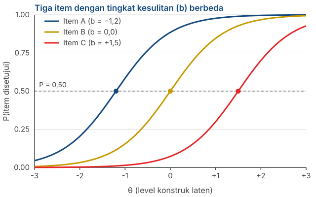
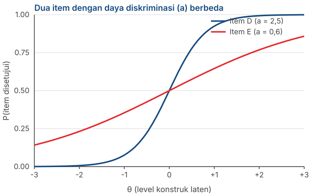

Variabel Laten: Classical Test Theory dan Sekilas Item Response Theory
Penyusunan Skala Psikologi
2026-08-06
Outline
- Apa yang dimaksud dengan variabel laten, dan kenapa ia disebut sebagai penyebab
- Classical Test Theory: \(X = T + E\) dan asumsi-asumsinya
- Kenapa reliabilitas bisa didefinisikan sebagai proporsi varians
- Apa sebenarnya arti true score dan kenapa ia bukan “nilai konstruk yang sesungguhnya”
- Konsekuensi CTT: jumlah item, atenuasi, dan ketergantungan pada sampel
- Keluarga model dalam CTT: parallel, tau-equivalent, congeneric
- Sekilas Item Response Theory dan apa yang ditawarkannya
Dari asumsi ke model
Di mana posisi kita sekarang
Pertemuan 1: pengukuran psikologis bersifat tidak langsung, dan tidak semua kumpulan item itu dapat disebut sebagai skala psikologi.
Pertemuan 2: ada enam asumsi yang kita pakai, sebagian besar implisit tanpa disadari.
Hari ini: asumsi-asumsi itu kita rapikan menjadi sebuah model matematika formal
Kenapa perlu model
Selama asumsi hanya berupa daftar, kita tidak bisa menghitung apa pun darinya. Begitu asumsinya dituliskan sebagai persamaan matematika, kita bisa menakar konsekuensinya, termasuk rumus reliabilitas yang akan Anda pakai di Pertemuan 13.
Apa itu variabel laten
Dua kata, dua ciri
Laten, bukan manifes. Tidak bisa diamati langsung. Aspirasi orang tua terhadap prestasi anaknya tidak bisa dilihat, hanya bisa disimpulkan.
Variabel, bukan konstanta. Ada sesuatu yang berubah — kekuatannya, besarannya — antar-orang, antar-waktu, antar-situasi.
Variabel laten biasanya merupakan karakteristik orang yang menjadi sumber data, bukan karakteristik objek yang ditanyakan.

Perhatikan siapa yang diukur
Kalau kita meminta orang tua melaporkan aspirasi mereka untuk anaknya, yang kita ukur adalah karakteristik orang tua, bukan anaknya.
Kalau kita meminta orang tua melaporkan aspirasi anaknya sendiri, variabel latennya lebih tepat disebut persepsi orang tua tentang aspirasi anak, bukan aspirasi anak itu sendiri.
Kalau kita meminta pembeli menilai sebuah merek (brand), yang kita ukur adalah persepsi pembeli, bukan sifat aktual mereknya.
Kesalahan penamaan yang sering terjadi
Nama konstruk Anda harus mencerminkan siapa yang datanya diambil (e.g., estimand).
Variabel laten sebagai penyebab
Intinya: kekuatan variabel laten menyebabkan item punya skor tertentu.
Misalnya item “Tidak ada pengorbanan yang terlalu besar demi keberhasilan anak saya”.
- Seberapa kuat partisipan menyetujuinya ditentukan oleh seberapa kuat aspirasi yang mereka miliki.
Perhatikan arah panahnya: dari konstruk ke item. Bukan sebaliknya.
Penting diperhatikan
Kalau satu sebab yang sama menggerakkan sepuluh item, maka kesepuluh item itu harus berkorelasi satu sama lain.
Korelasi antar-item bisa kita hitung. Variabel latennya tidak. Jadi korelasi antar-item adalah satu-satunya pintu masuk untuk menaksir sesuatu yang tidak bisa kita amati.
Inilah yang membuat analisis item mungkin
Kita tidak pernah bisa menghitung korelasi antara item dan true score, karena true score tidak teramati.
Tetapi kita bisa menghitung korelasi antar-item.
Dari pola korelasi antar-item itu, kita bisa menyimpulkan seberapa erat tiap item terhubung dengan variabel latennya.
Note
Prosedur yang akan Anda jalankan di Pertemuan 13 — corrected item-total correlation, membuang item yang lemah — seluruhnya bersandar pada logika ini.
Classical Test Theory
Persamaan yang menopang seluruh mata kuliah ini
\[X = T + E\]
\(X\) — observed score. Skor yang benar-benar Anda dapatkan dari responden.
\(T\) — true score. Skor yang akan diperoleh seseorang kalau pengukurannya sempurna.
\(E\) — error. Semua yang membuat \(X\) menyimpang dari \(T\).
Yang masuk ke dalam \(E\)
Kondisi fisik responden saat mengisi, suasana hati sesaat, ambiguitas kalimat item, gangguan di ruangan, salah klik. CTT tidak memisahkan sumber-sumber ini. Semuanya dikumpulkan menjadi satu suku error.
Tiga asumsi CTT
Rata-rata error adalah nol: \(E(e) = 0\). Kalau pengukuran diulang tak terhingga kali, error saling meniadakan.
Error tidak berkorelasi dengan true score: \(\text{Cov}(T, E) = 0\). Orang dengan kecemasan tinggi tidak otomatis punya error yang lebih besar.
Error antar-pengukuran tidak saling berkorelasi: \(\text{Cov}(E_1, E_2) = 0\).
Perhatikan apa yang diasumsikan di sini
Ketiganya menyatakan bahwa error bersifat acak, bukan sistematis. Bias yang konsisten — misalnya seluruh responden menjawab lebih positif karena social desirability — tidak masuk ke dalam \(E\).
Kita lihat sebentar lagi apa akibatnya.
Dari skor ke varians
Kalau \(X = T + E\) dan \(\text{Cov}(T, E) = 0\), maka variansnya ikut terpisah:
\[\sigma^2_X = \sigma^2_T + \sigma^2_E\]
Artinya: variasi skor yang kita amati terdiri atas variasi yang berasal dari perbedaan antar-orang yang sesungguhnya, ditambah variasi yang berasal dari noise.
Pertanyaan reliabilitas jadi sangat sederhana: berapa bagian dari variasi itu yang bukan noise?
Reliabilitas sebagai proporsi varians
\[\rho_{XX'} = \frac{\sigma^2_T}{\sigma^2_X} = \frac{\sigma^2_T}{\sigma^2_T + \sigma^2_E}\]
Nilainya antara 0 dan 1, karena ini sebuah proporsi.
\(\rho = 0{,}80\) berarti 80% variasi skor berasal dari perbedaan yang sesungguhnya antar-orang, dan 20% dari error.
Perhatikan bahwa ini definisi tentang seberapa konsisten skornya, bukan tentang seberapa benar.
Contoh terhitung
Misalkan skala Anda punya simpangan baku skor total \(\sigma_X = 5\), sehingga \(\sigma^2_X = 25\). Reliabilitasnya \(\rho = 0{,}80\).
\[\sigma^2_T = 0{,}80 \times 25 = 20 \qquad \sigma^2_E = 25 - 20 = 5\]
Standard error of measurement (SEM), yaitu simpangan baku dari error:
\[SEM = \sigma_X\sqrt{1-\rho} = 5\sqrt{0{,}20} = 2{,}24\]
Kenapa angka ini berguna
Seseorang yang mendapat skor 30 sebenarnya berada di suatu rentang, bukan di satu titik. Dengan tingkat kepercayaan 95%:
\[30 \pm 1{,}96 \times 2{,}24 \;\approx\; 25{,}6 \text{ sampai } 34{,}4\]
Apa artinya rentang ini
Dua orang dengan skor 30 dan 33 tidak bisa kita katakan berbeda. Rentang keduanya bertumpang tindih hampir seluruhnya.
Padahal skala dengan \(\rho = 0{,}80\) sudah tergolong baik menurut kriteria yang lazim dipakai.
Semakin rendah reliabilitasnya, semakin lebar rentangnya, dan semakin sedikit yang bisa kita katakan tentang seseorang.
Ingat ini saat menyusun norma
Di Pertemuan 14 Anda akan mengubah skor menjadi kategori. Kalau batas kategorinya lebih sempit daripada \(SEM\) skala Anda, kategori itu tidak bermakna — orang yang sama bisa masuk kategori berbeda hanya karena mengisi di hari yang berbeda.
Apa sebenarnya true score itu?
Definisinya lebih sempit daripada yang biasa dibayangkan
Dalam CTT, true score didefinisikan sebagai nilai harapan (expected value) dari observed score, kalau orang yang sama diukur berulang kali secara independen dengan alat yang sama.
Perhatikan: definisinya melekat pada alat ukurnya, bukan pada konstruknya.
True score adalah “skor yang stabil yang dihasilkan oleh suatu skala”, bukan “kadar konstruk yang sesungguhnya ada pada partisipan/responden”.
Analogi timbangan yang meleset
Bayangkan timbangan badan yang selalu menunjukkan 2 kg lebih berat dari berat sebenarnya.
Timbang seseorang seratus kali. Hasilnya sangat konsisten — error acaknya kecil, jadi reliabilitasnya tinggi.
True score orang itu, menurut definisi CTT, adalah berat sebenarnya + 2 kg.
Kesimpulan yang penting
CTT tidak punya cara untuk mendeteksi bias yang konsisten. Bias sistematis masuk ke dalam \(T\), bukan ke dalam \(E\).
Artinya: alat ukur yang reliabel bisa saja mengukur hal yang salah, secara sangat konsisten.
Reliabilitas bukan validitas
Reliabilitas adalah sifat skor: seberapa konsisten skor itu kalau pengukurannya diulang.
Validitas juga sifat skor — lebih tepatnya, sifat dari tafsiran atas skor untuk tujuan tertentu.
Yang pertama tidak menjamin yang kedua. Skala Anda bisa punya \(\alpha = 0{,}92\) dan skornya tetap menunjukkan konstruk yang berbeda dari yang Anda klaim.
Tapi ada hubungannya
Reliabilitas memberi batas atas bagi koefisien validitas, yaitu korelasi antara skor Anda dan suatu kriteria:
\[r_{XY} \leq \sqrt{\rho_{XX'}}\]
Dengan \(\rho = 0{,}64\), korelasi maksimum yang mungkin Anda peroleh adalah \(0{,}80\) — berapa pun kuatnya hubungan yang sesungguhnya.
Validitas bukan sifat skala
Validity refers to the degree to which evidence and theory support the interpretations of test scores for proposed uses of tests.
— AERA, APA, & NCME (2014), Standards for Educational and Psychological Testing
Kalimat “skala kami valid” sebenarnya tidak lengkap. Yang bisa didukung atau tidak didukung oleh bukti adalah tafsiran atas skor, untuk tujuan tertentu, pada populasi tertentu.
Messick (1989) menyebut validitas sebagai penilaian menyeluruh atas sejauh mana bukti dan teori mendukung kesimpulan dan tindakan yang diambil berdasarkan skor.
Kenapa pembedaan ini praktis, bukan sekadar soal istilah
Bukti validitas tidak otomatis berpindah. Skala yang tafsiran skornya terdukung untuk penelitian pada mahasiswa belum tentu terdukung untuk seleksi kerja atau penegakan diagnosis.
Begitu populasi, tujuan, atau cara penggunaannya berubah, buktinya perlu diperiksa ulang.
Karena itu validitas tidak pernah selesai. Ia tidak dicap sekali lalu berlaku selamanya.
Cara menuliskannya di laporan Anda
Hindari kalimat “skala kami valid”. Tulis seperti ini:
“Terdapat bukti yang mendukung tafsiran skor skala X sebagai indikator konstruk Y, pada populasi Z, untuk keperluan W.”
Jenis-jenis buktinya kita bahas di Pertemuan 7.
Hubungkan dengan Pertemuan 1
Ingat kritik Michell: apakah atribut psikologis benar-benar kuantitatif?
Persamaan \(X = T + E\) mengandaikan jawabannya “ya”. Kita menjumlahkan dan mengurangkan \(T\) dan \(E\) seolah-olah keduanya besaran.
CTT tidak membuktikan asumsi itu. CTT membangun di atasnya.
Sikap yang kita pakai
Kita akan memakai CTT sepanjang semester ini karena ia berguna dan bisa dikerjakan. Tetapi Anda sekarang tahu persis di atas apa ia berdiri.
Konsekuensi CTT
Kenapa menambah item menaikkan reliabilitas
Error bersifat acak. Sebagian item membuat skor terlalu tinggi, sebagian lagi terlalu rendah.
Ketika item dijumlahkan, error yang berlawanan arah saling meniadakan, sementara true score justru saling menguatkan.
Semakin banyak item, semakin kecil proporsi \(\sigma^2_E\) terhadap \(\sigma^2_X\).
Ingat anak panah Bernoulli dari Pertemuan 1
Prinsipnya sama persis: satu tembakan tidak memberi banyak informasi, tetapi rata-rata dari banyak tembakan mendekati titik pusat yang sebenarnya.
Rumusnya (Spearman-Brown) kita bahas di Pertemuan 6.
Tapi ada batasnya
Menambah item hanya menolong kalau item barunya benar-benar mengukur konstruk yang sama.
Menambah item yang isinya nyaris sama akan menaikkan \(\alpha\) tanpa menambah informasi apa pun — ini pelanggaran local independence dari Pertemuan 2.
Dan kuesioner yang terlalu panjang memunculkan masalah baru: kelelahan responden dan jawaban asal.
Untuk proyek Anda
Angka \(\alpha\) yang tinggi bukan bukti bahwa skala Anda bagus. Ia bisa dicapai hanya dengan menulis sepuluh parafrase dari kalimat yang sama.
Sekarang atenuasi bisa kita pahami
Di Pertemuan 1 kita memakai rumus ini tanpa penjelasan:
\[r_{XY} = \rho_{T_X T_Y} \times \sqrt{\rho_{XX'} \times \rho_{YY'}}\]
Sekarang asalnya jelas: yang kita korelasikan adalah \(X\), dan \(X\) mengandung \(E\).
Bagian \(E\) tidak berkorelasi dengan apa pun — menurut asumsi kedua CTT.
Jadi error hanya menambah penyebut tanpa menambah pembilang, dan korelasinya mengecil.
Tip
Semakin besar porsi noise dalam skor Anda, semakin kecil semua korelasi yang Anda laporkan. Ini berlaku otomatis, tanpa kesalahan apa pun dari pihak Anda.
Kelemahan CTT yang paling serius
Reliabilitas dalam CTT bergantung pada sampel.
Kalau responden Anda sangat seragam pada atribut yang diukur, rentang true score mereka sempit. Korelasi antar-item ikut mengecil, dan reliabilitas terhitung menjadi rendah — padahal alat ukurnya sama saja.
Sebaliknya, sampel yang sangat beragam akan membuat alat yang sama tampak lebih reliabel.
Konsekuensi praktis untuk uji coba Anda
Reliabilitas yang Anda laporkan bukan sifat alat ukur Anda semata — ia sebagian juga sifat sampel Anda. Karena itu, laporkan karakteristik sampel bersama koefisien reliabilitasnya, selalu.
Bukan hanya reliabilitas
Tingkat kesulitan item dalam CTT diukur sebagai proporsi responden yang menyetujuinya. Angka ini berubah kalau sampelnya berubah.
Daya diskriminasi item diukur sebagai korelasi item dengan skor total. Ini pun berubah mengikuti sampel.
Artinya, hampir semua statistik item dalam CTT bersifat relatif terhadap kelompok yang kebetulan Anda ukur.
Note
Inilah persoalan yang ingin dipecahkan oleh Item Response Theory. Kita bahas di bagian terakhir.
Keluarga model dalam CTT
Tiga model pengukuran
Apa bedanya
Congeneric — setiap item boleh punya hubungan yang berbeda kekuatannya dengan konstruk, dan varians error yang berbeda pula. Paling longgar, paling realistis.
Tau-equivalent — semua item diasumsikan punya hubungan yang sama kuatnya dengan konstruk, tetapi varians error-nya boleh berbeda.
Parallel — semua item punya hubungan yang sama kuat dan varians error yang sama. Paling ketat, paling jarang terpenuhi.
Note
Perhatikan bahwa ketiganya adalah asumsi tentang item Anda, bukan tentang orangnya. Ini kelanjutan langsung dari asumsi unit weighting di Pertemuan 2.
Kenapa ini akan penting di Pertemuan 6
Cronbach’s alpha mengasumsikan model tau-equivalent — bahwa semua item menyumbang sama kuat.
Kalau item Anda sebenarnya congeneric (dan hampir selalu begitu), \(\alpha\) akan mengestimasi reliabilitas lebih rendah daripada yang sesungguhnya.
Koefisien omega (\(\omega\)) tidak menuntut asumsi itu, sehingga umumnya lebih tepat.
Yang perlu Anda simpan sekarang
Anda belum perlu menghitung apa pun. Yang perlu Anda bawa dari slide ini adalah: \(\alpha\) punya asumsi, dan asumsinya jarang terpenuhi. Kita cek konsekuensinya di Pertemuan 6.
Sekilas Item Response Theory
Masalah yang ingin dipecahkan
Dalam pengukuran fisik, 20 kilogram berarti sama apa pun yang ditimbang. Sifat alat ukurnya tidak bergantung pada objeknya.
IRT ingin mencapai hal yang sama untuk item kuesioner: menetapkan sifat item yang tidak bergantung pada siapa yang mengisinya.
Dalam CTT, sifat alat ukur dan karakteristik orang yang diukur selalu terikat satu sama lain. IRT, setidaknya secara teori, tidak.
Perbedaan pertama: fokus pada item
CTT
Menekankan sifat skala secara keseluruhan.
Reliabilitas dinaikkan terutama dengan menambah item.
IRT
Menekankan sifat tiap item.
Reliabilitas dinaikkan dengan memilih item yang lebih baik.
Note
Perbedaan ini punya konsekuensi praktis yang besar: CTT cenderung menghasilkan skala yang panjang dan banyak mengulang, IRT cenderung menghasilkan skala yang lebih pendek tetapi itemnya terpilih.
Perbedaan kedua: item punya “tingkat kesulitan”
Item “Saya kadang merasa sedih” mengukur level depresi yang lebih rendah daripada item “Saya merasa hidup tidak layak dijalani”.
Item pertama membedakan orang yang jarang sedih dari orang yang agak sering sedih. Item ini tidak berguna untuk membedakan orang yang depresinya berat dari yang jauh lebih berat.
Item kedua hanya membedakan orang-orang di ujung atas kontinum.
Gagasan intinya
Setiap item peka pada bagian tertentu dari rentang konstruk. IRT membuat hal itu eksplisit dan bisa dihitung.
Kurva karakteristik item (item characteristic curve)

Sumbu mendatar: level konstruk laten seseorang (\(\theta\)). Sumbu tegak: peluang menyetujui item.
Parameter kesulitan (\(b\)) adalah titik di mana peluangnya tepat 0,50 — ditandai lingkaran.
Cara membaca grafiknya
Item A (\(b = -1{,}2\)) mudah disetujui. Bahkan orang dengan level konstruk di bawah rata-rata pun cenderung menyetujuinya.
Item C (\(b = +1{,}5\)) sulit disetujui. Hanya orang di ujung atas yang cenderung menyetujuinya.
Skala yang baik memuat item yang tersebar di sepanjang rentang, bukan menumpuk di satu titik.
Kelemahan yang sering luput
Kalau semua item Anda “mudah”, skala Anda tidak bisa membedakan orang di ujung atas. Semuanya akan mendapat skor mendekati maksimum. Ini disebut ceiling effect, dan tidak akan terdeteksi oleh \(\alpha\) yang tinggi.
Parameter kedua: daya diskriminasi

Kurva Item D curam: perubahan kecil pada \(\theta\) langsung mengubah peluang menyetujuinya. Item ini membedakan orang dengan tajam.
Kurva Item E landai: peluangnya berubah pelan. Item ini hampir tidak membedakan siapa pun.
Note
Dalam CTT, padanan terdekat dari daya diskriminasi adalah korelasi item dengan skor total — yang akan Anda hitung di Pertemuan 13.
Keluarga model IRT
Rasch / 1PL — hanya memodelkan kesulitan (\(b\)).
2PL — memodelkan kesulitan dan daya diskriminasi (\(a\)).
3PL — menambahkan parameter tebakan (\(c\)), berguna untuk soal pilihan ganda.
Untuk item Likert yang pilihan jawabannya berjenjang, dipakai model politomus (polytomous) seperti Graded Response Model.
Note
IRT lebih tepat disebut keluarga model, bukan satu prosedur tunggal.
Apa yang dituntut IRT
Unidimensionalitas — sama seperti CTT. Item harus berbagi satu variabel laten.
Local independence — dituntut secara formal, bukan sekadar dianjurkan.
Sampel besar dan beragam. Keunggulan teoretis IRT hanya terwujud kalau itemnya dikalibrasi pada sampel yang besar dan heterogen.
Perhatikan
Dua asumsi pertama itu persis asumsi nomor 4 dari Pertemuan 2. IRT tidak menghapus asumsi, melainkan menuntutnya lebih ketat dan memberi lebih banyak sebagai imbalannya.
Kenapa mata kuliah ini tetap memakai CTT
Ukuran sampel. Uji coba yang realistis bagi kelompok Anda semester ini belum cukup besar untuk mengalibrasi parameter IRT secara stabil.
Perangkat lunak. Kita memakai jamovi, dan alur kerja CTT di sana jauh lebih sederhana untuk dipelajari dalam satu semester.
Hasilnya tetap baik. Untuk penyusunan skala Likert dengan tujuan penelitian, metode klasik sudah memadai.
Yang perlu Anda bawa dari bagian ini
Bukan kemampuan menjalankan analisis IRT, melainkan kesadaran bahwa statistik item dalam CTT bersifat relatif terhadap sampel Anda — dan bahwa ada kerangka lain yang menangani persoalan itu secara langsung.
Latihan kelompok
Mengurutkan item berdasarkan “kesulitan”
Berikut enam item untuk konstruk kecemasan sosial:
- Saya agak gugup ketika harus memperkenalkan diri di kelas baru.
- Saya menghindari acara yang mengharuskan saya berbicara dengan orang yang tidak dikenal.
- Saya membatalkan rencana yang penting karena takut bertemu banyak orang.
- Saya merasa tidak nyaman ketika diperhatikan orang lain.
- Saya tidak bisa kuliah atau bekerja karena takut dinilai orang.
- Saya lebih suka duduk di belakang supaya tidak ditanya.
Urutkan dari yang paling mudah disetujui sampai yang paling sulit disetujui. Waktu: 10 menit.
Lalu diskusikan
Apa dasar yang kelompok Anda pakai untuk mengurutkannya? Anda tidak punya data sama sekali — jadi dari mana penilaian itu datang?
Bagian mana dari rentang kecemasan sosial yang tidak tercakup oleh keenam item ini?
Sekarang lihat konstruk kelompok Anda sendiri. Apakah item yang sudah terbayang di kepala Anda menumpuk di satu bagian rentang, atau tersebar?
Kalau seluruh item Anda “mudah disetujui”, apa yang akan terjadi pada sebaran skor dan pada kemampuan skala Anda membedakan responden?
Tip
Pertanyaan nomor 3 akan kita pakai lagi secara langsung ketika menyusun blueprint di Pertemuan 10.
Rangkuman
Enam poin utama
Variabel laten adalah sebab, dan itulah alasan item dalam satu skala harus berkorelasi.
\(X = T + E\), dengan asumsi bahwa error bersifat acak — bukan sistematis.
Reliabilitas adalah proporsi varians: bagian dari keragaman skor yang bukan noise.
True score melekat pada alat ukur, bukan pada konstruk. Alat yang bias secara konsisten tetap bisa sangat reliabel — dan reliabilitas maupun validitas sama-sama sifat skor, bukan sifat skala.
Statistik item dalam CTT bergantung pada sampel. Laporkan karakteristik sampel bersama koefisiennya.
\(\alpha\) mengasumsikan model tau-equivalent, yang jarang terpenuhi.
Untuk Pertemuan 4
Kita turun ke tingkat yang paling praktis: format respons.
- Likert — berapa titik yang sebaiknya dipakai, dan apakah perlu titik tengah?
- Semantic Differential — kapan pasangan kata sifat lebih tepat daripada pernyataan.
- Guttman — ketika item memang berjenjang secara logis.
- Dan pertanyaan yang menghubungkannya dengan hari ini: pilihan format respons itu mengubah asumsi apa?
Persiapan
Baca DeVellis & Thorpe (2022), Bab 5 bagian tentang format respons. Kalau ingin melihat versi formal dari materi hari ini, Bab 3 buku yang sama membahas reliabilitas secara penuh.
Ada pertanyaan❓

Catatan
- Paparan disusun dengan menggunakan dan Quarto dengan template dari UNAIR Theme.
- Kontak saya via amelia.zein@psikologi.unair.ac.id
Rujukan
AERA, APA, & NCME. (2014). Standards for educational and psychological testing. American Educational Research Association.
Crocker, L., & Algina, J. (2008). Introduction to classical and modern test theory. Cengage.
DeVellis, R. F., & Thorpe, C. T. (2022). Scale development: Theory and applications (5th ed.). SAGE.
Embretson, S. E., & Reise, S. P. (2010). Item response theory for psychologists. Psychology Press.
Hambleton, R. K., Swaminathan, H., & Rogers, H. J. (1991). Fundamentals of item response theory. SAGE.
Lord, F. M., & Novick, M. R. (2008). Statistical theories of mental test scores. Information Age Publishing. (Karya asli terbit 1968)
McDonald, R. P. (1999). Test theory: A unified treatment. Lawrence Erlbaum.
Messick, S. (1989). Validity. In R. L. Linn (Ed.), Educational measurement (3rd ed., pp. 13–103). Macmillan.
Rasch, G. (1960). Probabilistic models for some intelligence and attainment tests. Danmarks Paedagogiske Institut.
Raykov, T., & Marcoulides, G. A. (2011). Introduction to psychometric theory. Taylor & Francis.
Samejima, F. (1969). Estimation of latent ability using a response pattern of graded scores. Psychometrika Monograph Supplement, 34(4, Pt. 2).